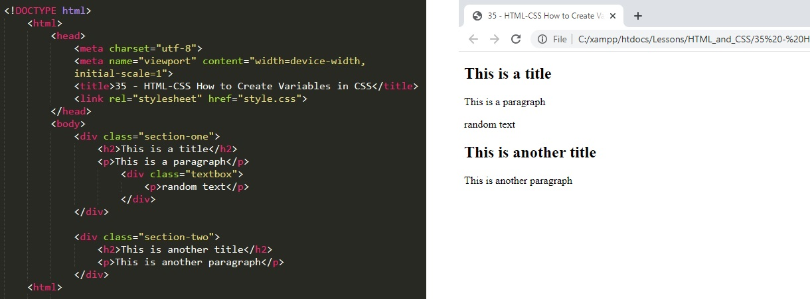
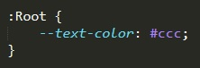
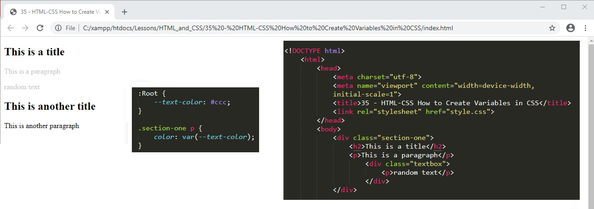
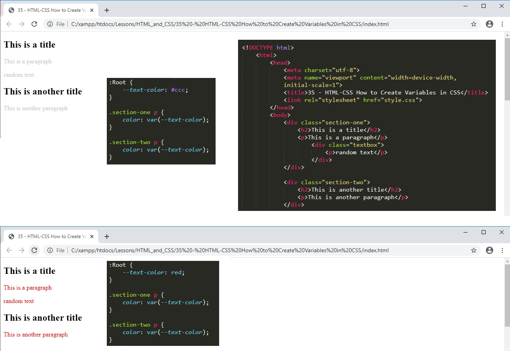
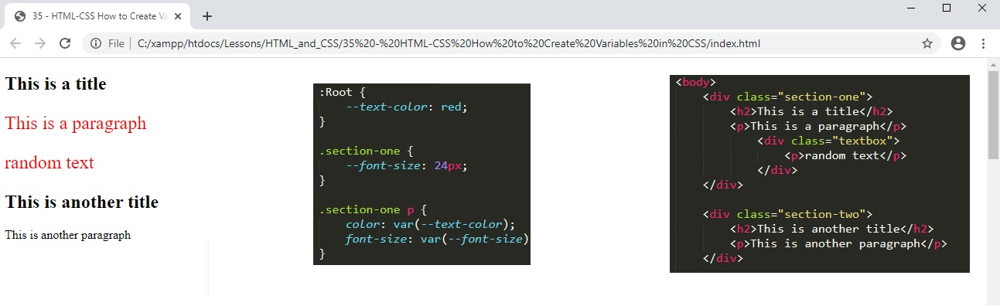

01. CSS variable is something new inside CSS. A variable is a type of container that we can asign a value to. So if we have a huge website and we have a specific colour that we use for all the text. If later on we want to change the colour of this text then instead of going through the style sheet and having to change it in many places we can asign a vairable and change it in just one place.
01a. Below is the starting HTML code.

02. We can create psudo element to refer to a specific thing inside the website. For example we can create a psudo element called root. The root is the highest level in the HTML document that we have. By selecting the root we set the level to one higher than the HTML tag which is the highest tag in the HTML document. We can only style a child of an element so by setting it at the highest level anything inside the document can be affected.
02a. We define the psudo element with a colon (:) The psudo tag is identified by a double dash. We then give it a unique name that can be anything. If we want to use two words then we caan seperate them by a dash.

03. So now if I want to apply the styling to any element inside my website I can select it and apply the psudo tag variable.
03a. Same as before we highlight the element that we want to style with class or tag type or both. we chose what we want to style, for example colour, then instead of a value we add a variable in brackets and refer to the variable that we created earlier.

04. We can use this psudo element tag variable to style multiple elements inside the HTML file.
04a. Now if we want to change the text colour of all the elements on the page we just change it at the top in the tag.

05. We can also create a variable in a class.
05a. As anything in that class is a child of the class then we can apply that variable to child elements. for example P tags within section-one are child elements of the div class of section-one.

06. What we cannot do is use the variable in sectio-one class to style an element outside of section-one class because it is not a child..
06a. So if I try to apply the variable text-size from section-one class to an element in section-two it will not work.